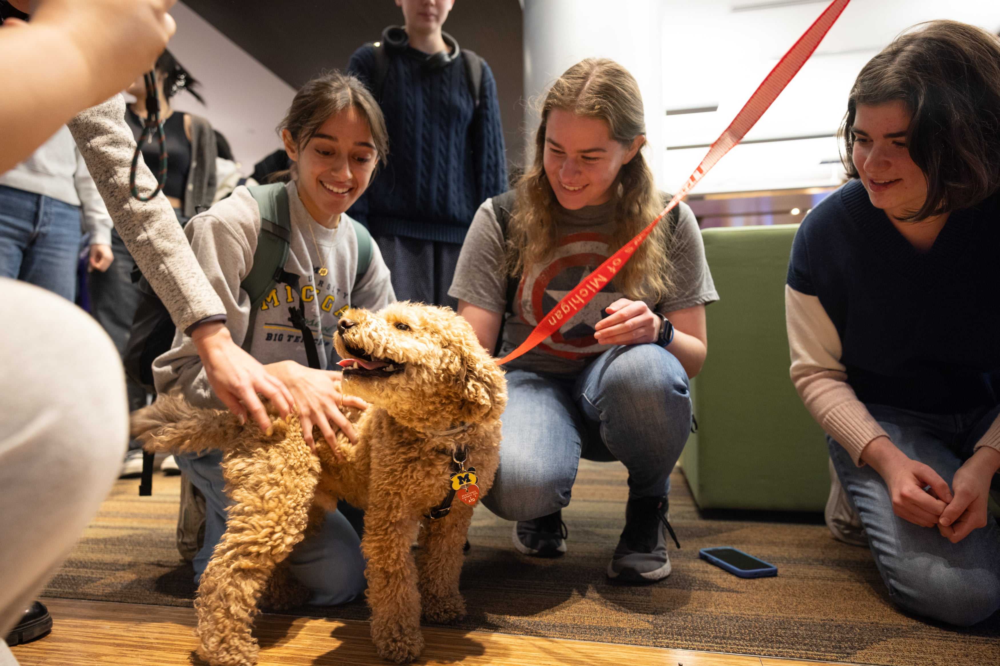
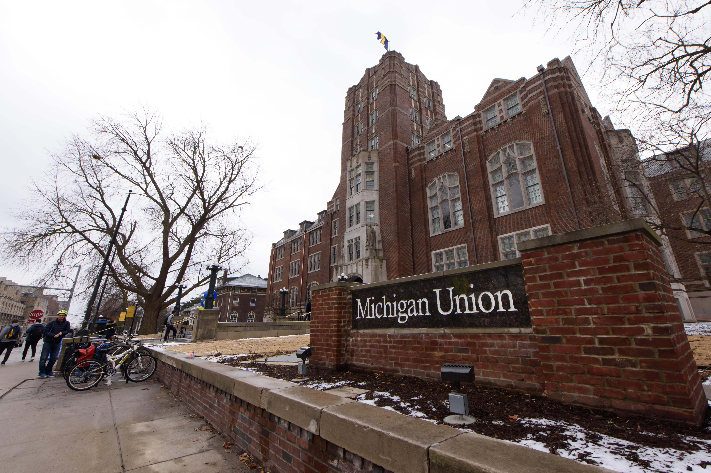

Click on what you need!
Maize and Blue Cupboard
Contact
Phone: 734-936-2794
Address: 420 S State St Ann Arbor, MI 48109
Located in the basement of the Betsy Barbour Residence Hall, please enter via the Maynard entrance only to ensure privacy for residents. Please contact them via phone if you need ramp or elevator access.
Details
College students and staff are experiencing food insecurity at alarming rates. The Maize and Blue Cupboard is here to provide an immediate and comprehensive response for the U-M community. By offering resources, educational opportunities, compassionate support and more, the Maize and Blue Cupboard helps students develop the skills to make informed decisions.
Shopping at the Maize and Blue Cupboard is by appointment only. Please make an appointment by visiting their sign up page.
Counseling and Psychological Services
Contact
Phone: 734-764-8312 (24hrs)
Email: caps-uofm@umich.edu
Address:
Michigan Union
530 South State Street
Suite 4079
Ann Arbor, MI 48109
Details
The mission of Counseling and Psychological Services is to foster the psychological development and emotional well-being of students through counseling and psychotherapy, preventive and educational programming, consultation and outreach, as well as contributions to the mental health professions. In collaboration with students, schools, colleges, and other units, Counseling and Psychological Services strives to develop a diverse, inclusive and multicultural community.
Offerings Include:
- Clinical Services
- Crisis Services
- Consultation
- CAPS Embedded Model
- Care Management
- Outreach and Community Engagement
- Training
SafeRide Late Night Transportation
Request a Ride
During Fall and Winter terms, you may request a ride through the TransLoc mobile app.
You can download the mobile application from the Apple App Store and Google Play.
Select “University of Michigan SafeRide” from within the app. Login with your UMICH username and password to request a ride and view estimated wait times.
If you do not have mobile app/computer access, you may call (734) 647-8000, and select Option 1.
Details
SafeRide is a free service that transports students, faculty, and staff to their residence or vehicle within a one-mile radius of campus. Riders may use this service once per evening and must present a valid U-M ID (Mcard). During Fall and Winter terms, this service is available daily from 8:00 p.m. - 2:00 a.m.
An employee from U-M Transit Services will come to your campus location and drive you to your requested location (within a one-mile driving radius of Central and North campuses). During non-service hours, alternative service providers may be identified by UMPD.
Sexual Assault Prevention and Awareness Center
Contact
24-hour Crisis Line: (734) 936-3333
Office Phone: (734) 764-7771
Hours: Monday - Friday, 9:00 a.m. - 5:00 p.m.
Address:
4130 Michigan Union
530 S. State Street
Ann Arbor, MI 48109-1308
Details
The Sexual Assault Prevention and Awareness Center offers prevention education for students, confidential support for survivors (students, faculty, and staff), and collaborates with other offices to offer trainings, programs, and innovative community engagement strategies to collectively create a campus free from violence.
U-M Division of Public Safety and Security
Contact
Phone Number: (734) 763-1131
Email Address: dpss-safety-security@umich.edu
Address:
1239 Kipke Drive
Ann Arbor, MI 48109-1002
Details
The University of Michigan Division of Public Safety and Security (DPSS) supports the mission of the university as a partner serving to ensure a safe and secure environment while improving the quality of life for all those living, learning, working, healing and visiting within our community.
Services:
- Property Protection
- Report a Crime or Concern
- Request an Incident Report
- ID, Keys, and Locks
- Safe Exchange Zone
- Fingerprinting
- Event Security
- Ride Along Program
- Lost and Found
- Security Cameras
- Parking and Transportation
Student Emergency Funding
Students may experience an emergency situation or one-time, unusual, unforeseen expense while in school. The University offers several types of assistance for students in such special circumstances.
NOTE: Emergency funding may impact previously awarded aid, so it is important to coordinate with the Office of Financial Aid. Students are also encouraged to contact the student affairs office in their respective school or college.
Situations that warrant funding may include:
- Medical, dental or mental health emergencies for the student
- Major accidents and events such as fire and natural disasters
- Expenses related to the death of an immediate family member